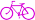

Por dirección
Introduce las direcciones de origen y destino:
Origen
Destino
Por código postal
Introduce los códigos postales:
CP Origen
CP Destino
Establecer códigos postales
Por coordenadas
Origen Destino
Longitud
Longitud
Latitud
Latitud
Establecer puntos de la ruta
PUNTOS DE INTERES TURISTICO:
Origen:
La Catedral
La Lonja
Las Torres de Serranos
Santa Catalina
La Basilica de la Virgen
Palacio del Marqués de Dos Aguas
La Plaza de Toros
El Miguelete
Almoina
Ciudad de las Artes y las Ciencias
Palacio de la Exposición
Estación del Norte
Las Torres de Quart
Mercado de Colón
Mercado Central
Convento de Santo Domingo
Iglesia de los Santos Juanes
Monasterio San Miguel de los Reyes
Palau de la Generalitat
Palau de les Arts
Claustro del Convento del Carmen
Museo San Pío V
Plaza Redonda
Jardín Botánico
Viveros
El Panterre
Edificio Veles e Vents
Correos
Boramar
Iglesia de San Agustín
Viejo cauce del Turia
Iglesia y Palacio del Temple
Plaza de Ayuntamiento
Palacio de Justicia
Oceanogràfic
Hemisfèric
Ágora
Destino:
La Lonja
La Catedral
Las Torres de Serranos
Santa Catalina
La Basilica de la Virgen
Palacio del Marqués de Dos Aguas
La Plaza de Toros
El Miguelete
Almoina
Ciudad de las Artes y las Ciencias
Palacio de la Exposición
Estación del Norte
Las Torres de Quart
Mercado de Colón
Mercado Central
Convento de Santo Domingo
Iglesia de los Santos Juanes
Monasterio San Miguel de los Reyes
Palau de la Generalitat
Palau de les Arts
Claustro del Convento del Carmen
Museo San Pío V
Plaza Redonda
Jardín Botánico
Viveros
El Panterre
Edificio Veles e Vents
Correos
Boramar
Iglesia de San Agustín
Viejo cauce del Turia
Iglesia y Palacio del Temple
Plaza de Ayuntamiento
Palacio de Justicia
Oceanogràfic
Hemisfèric
Ágora
POR INTERACCION CON EL MAPA:
Desactivado
Elegir punto de salida
Elegir punto de llegada
En coche
A pie
En bicicleta

Calcular Ruta
La longitud total de la ruta es de
Km
Acerca de...